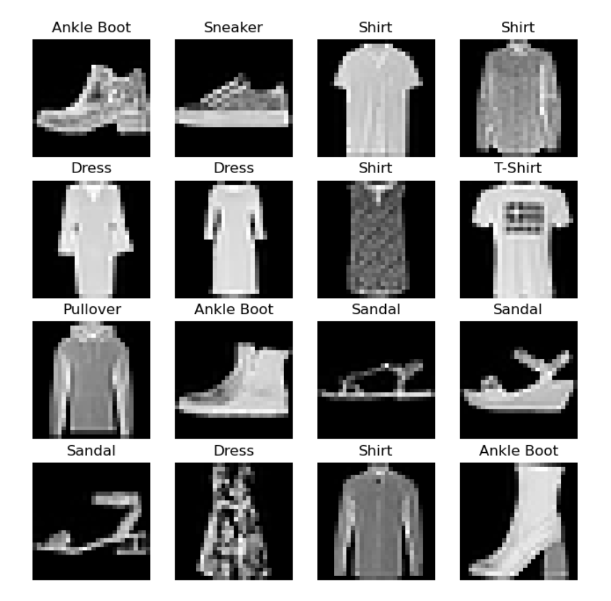

Datasets & DataLoaders & Transforms
Load data with PyTorch Datasets and DataLoaders
PyTorch provides two data primitives: torch.utils.data.DataLoader and torch.utils.data.Dataset that allow you to use pre-loaded datasets as well as your own data. Dataset stores the samples and their corresponding labels, and DataLoader wraps an iterable around the Dataset to enable easy access to the samples.
Loading a dataset
Load the Fashion-MNIST dataset from TorchVision. Fashion-MNIST is a dataset of Zalando’s article images consisting of of 60,000 training examples and 10,000 test examples. Each example comprises a 28×28 grayscale image and an associated label from one of 10 classes.The images show individual articles of clothing at low resolution (28 by 28 pixels), as seen here:

The FashionMNIST Dataset with the following parameters:
Parameters + root (string) – Root directory of dataset where FashionMNIST/processed/training.pt and FashionMNIST/processed/test.ptexist.
train(bool, optional) – If True, creates dataset from training.pt, otherwise from test.pt.download(bool, optional) – If true, downloads the dataset from the internet and puts it in root directory. If dataset is already downloaded, it is not downloaded again.transform(callable, optional) – A function/transform that takes in an PIL image and returns a transformed version. E.g, transforms.RandomCroptarget_transform(callable, optional) – A function/transform that takes in the target and transforms it.
1 | import torch |
Iterating and Visualizing the Dataset
We can index Datasets manually like a list: training_data[index]. We use matplotlib to visualize some samples in our training data.
1 | labels_map = { |

Creating a Custom Dataset
A custom Dataset class must implement three functions: __init__, __len__, and __getitem__. Take a look at this implementation; the FashionMNIST images are stored in a directory img_dir, and their labels are stored separately in a CSV file annotations_file.
1 | from torch.utils.data import Dataset |
Preparing your data for training with DataLoaders
The Dataset retrieves dataset's features and labels one sample at a time. While training a model, we typically want to pass samples in "minibatches", reshuffle the data at every epoch to reduce model overfitting, and use Python's multiprocessing to speed up data retrieval.
DataLoader is an iterable that abstracts this complexity for us in an easy API.
1 | from torch.utils.data import DataLoader |
Iterate through the DataLoader
We have loaded that dataset into the Dataloader and can iterate through the dataset as needed. Each iteration below returns a batch of train_features and train_labels(containing batch_size=64 features and labels respectively).
Because shuffle=True, after we iterate over all batches the data is shuffled (for finer-grained control over the data loading order, take a look at Samplers.)
1 | training_data, test_data = DataPreparetion.data_load() |
Transforms
Data does not always come in its final processed form that is required for training machine learning algorithms. We use transforms to perform some manipulation of the data and make it suitable for training.
All TorchVision datasets have two parameters (transform to modify the features and target_transform to modify the labels) that accept callables containing the transformation logic.
The FashionMNIST features are in PIL Image format, and the labels are integers. For training, we need the features as normalized tensors, and the labels as one-hot encoded tensors. To make these transformations, we use ToTensor and Lambda.
1 | #define a function to turn the integer into a one-hot encoded tensor. |